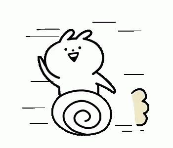

Hello. My name is Trang, and I am an upcoming senior at La Quinta High School. I grew up from a city called Sai Gon, Vietnam. What I like to do in my spare time is listening to music, watching television, and finding new things to learn. I also enjoy getting together with my friends to hang out. Moreover, spending time with family is also one of my favorites because I can share what I am doing and any troubles I have. The school helps me to grow as an individual in many activities, meet new people, and a place for me to archive my goal.
My dream is to make something out of my life by becoming a software engineer and volunteering at as many legal organizations as I can, so I will have the chance to gain all the necessary knowledge and experiences to push myself in the future. I want to be a software engineer who can develop a system to protect the computer and update it regularly to give the best experience for the customer. I start to be more focused and professional in one language, either Python or Java.
During my junior year, I had an excellent opportunity to be part of an internship offered by Orange County United Way. It surprised me since I did not expect to be in the program. Unfortunately, the program canceled in-person activities and moved to virtual online due to the Covid-19 situation. But every online workshops provided me with a valuable lesson that I never experienced before. I learned lots of tips for meeting online, how to be more natural when talking with the interviewer. I also acquire knowledge of networking, how to make first impressions and management in a company. Not only that, I see the differences of transition from high school to college, and then when I get a job. It will be a whole new world open for me to try to be more familiar over time. The importance of creating a budget will help me use money in efficient way. Additionally, I have a chance to meet googlers, and it is an honor to hear stories of their life. I admire them of the way they talk, the struggles they face, and how they get into Google. It creates for me a motivation that I want to be like them when I graduate from college. This internship gives me many useful pieces of knowledge that I could apply in the future. I am thankful for the Youth Career Connection for preparing and building up this program.
A website that coded by me which display about myself, resume, project, elevator speech, and contact information. It also shows my skills and achievements during my high school time.
Your potential is endless.
